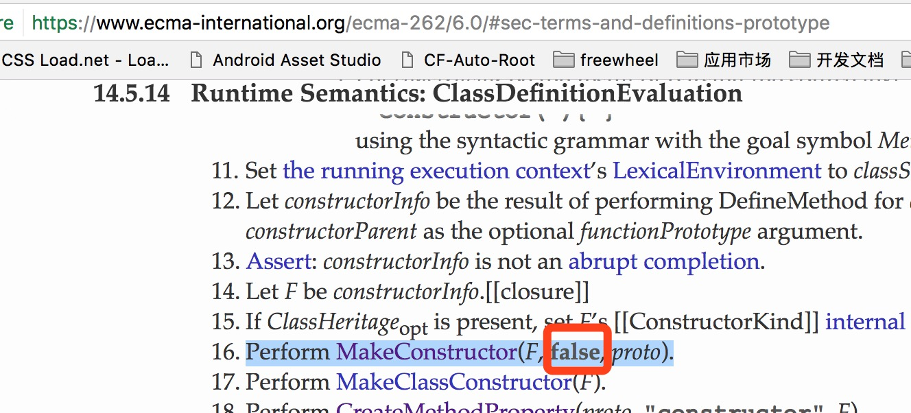

<!DOCTYPE html><html><head><meta charset="utf-8"><meta name="viewport" content="width=device-width, initial-scale=1.0"><title>ES6中class的prototype引用不可修改</title><meta name="description" content="indooorsman's blog - csser.me"><meta name="keywords" content="es6,class,prototype,function"><link rel="stylesheet" href="/main.css"><link rel="shortcut icon" type="image/png" href="/48.png"><script src="/themes/highlight/highlight.pack.js" type="text/javascript"></script><script type="text/javascript">hljs.configure({languages: ['javascript']});
hljs.initHighlightingOnLoad();</script><script>var _hmt = _hmt || [];
(function () {
  var hm = document.createElement("script");
  hm.src = "//hm.baidu.com/hm.js?2bdbd2417ecf82c495cfefb39957b9ce";
  var s = document.getElementsByTagName("script")[0];
  s.parentNode.insertBefore(hm, s);
})();
</script></head><body><div id="container" class="markdown-body"><div class="nav-breads"><a href="http://csser.me">首页</a><span class="split">/</span><a href="http://blog.csser.me">博客</a><span class="split">/</span></div><h1>ES6中class的prototype引用不可修改<sub>2017-07-27</sub></h1>

<p>今天在一个前端微信群里有人提出了这样一个问题：</p>
<pre><code class="language-js">class A {
  say() {
    console.log(&#39;i am a&#39;);
  }
}

// 直接覆盖A.prototype无效
A.prototype = {
  say() {
    console.log(&#39;i am b&#39;);
  }
};

let a  = new A();
a.say();
// =&gt; i am a
</code></pre>
<p>通过<code>ES6</code>的<code>class</code>创建一个类，然后修改其<code>prototype</code>的引用是无效的。如果用<code>ES5</code>的方式，则可以随意修改：</p>
<pre><code class="language-js">function A1() {}
A1.prototype = {
  say: function() {
    console.log(&#39;i am a1&#39;);
  }
};
A1.prototype = {
  say: function() {
    console.log(&#39;i am b1&#39;);
  }
};
var a1  = new A1();
a1.say();
// =&gt; i am b1
</code></pre>
<p>可见<code>ES6</code>中<code>class</code>的实现跟<code>function</code>相比在这一点上是截然不同的</p>
<p>从表现上来看，通过<code>class</code>声明的类的<code>prototype</code>是“不可写”的，我们知道<code>Object.defineProperty</code>方法可以设置对象的某个属性是否可写，例如：</p>
<pre><code class="language-js">let obj = {};
Object.defineProperty(obj, &#39;prop1&#39;, {
  value: 1, // 属性值
  writable: false // 是否可写
});
console.log(obj.prop1); // =&gt; 1
obj.prop1 = 2;
console.log(obj.prop1); // =&gt; 1
</code></pre>
<p>可以看到这样定义(<code>writable: false</code>)的<code>obj.prop1</code>对其赋值是无效的</p>
<p>那么如何判断一个对象的某个属性是不是可写呢？很简单：</p>
<pre><code class="language-js">class AnotherA {
  say() {
    console.log(&#39;i am another a&#39;);
  }
}
let prototypeDescriptor = Object.getOwnPropertyDescriptor(AnotherA, &#39;prototype&#39;);
console.log(prototypeDescriptor);
// =&gt; {value: Object, writable: false, enumerable: false, configurable: false}
</code></pre>
<p>可以看到<code>class</code>声明的类的<code>prototype</code>的<code>writeable</code>是<code>false</code>，所以对其<code>prototype</code>再次赋值是无效的，当然可以通过<code>AnotherA.prototype.say = ...</code>对其成员进行修改</p>
<p>经过查阅<code>ECMA2015</code>规范也证实了这一点：</p>
<p></p>
<p>上图是<code>ES6</code>中关于<code>class</code>的定义方案，在第16步中，调用<code>MakeConstructor</code>方法，注意第二个参数为<code>false</code>，然后再看下<code>MakeConstructor</code>这个方法：</p>
<p></p>
<p>可以看到，正是第二个参数决定了<code>prototype</code>是否可写</p>
<p>有兴趣的朋友可以再查一下<code>function</code>在这一步是怎么实现的，你会发现同样也调用了<code>MakeConstructor</code>方法，但是第二个参数是<code>true</code></p>
<p>参考资料： </p>
<ul>
<li>ES6 ClassDefinitionEvaluation - <a href="https://www.ecma-international.org/ecma-262/6.0/#sec-runtime-semantics-classdefinitionevaluation">https://www.ecma-international.org/ecma-262/6.0/#sec-runtime-semantics-classdefinitionevaluation</a></li>
<li>ES6 MakeConstructor - <a href="https://www.ecma-international.org/ecma-262/6.0/#sec-makeconstructor">https://www.ecma-international.org/ecma-262/6.0/#sec-makeconstructor</a></li>
<li>Object.defineProperty - <a href="https://developer.mozilla.org/en-US/docs/Web/JavaScript/Reference/Global_Objects/Object/defineProperty">https://developer.mozilla.org/en-US/docs/Web/JavaScript/Reference/Global_Objects/Object/defineProperty</a></li>
<li>Object.getOwnPropertyDescriptor - <a href="https://developer.mozilla.org/en-US/docs/Web/JavaScript/Reference/Global_Objects/Object/getOwnPropertyDescriptor">https://developer.mozilla.org/en-US/docs/Web/JavaScript/Reference/Global_Objects/Object/getOwnPropertyDescriptor</a></li>
</ul>
<p><br></p>
<p><strong><em>EOF</em></strong></p>
<p><br></p><h4>分享</h4><div class="bdsharebuttonbox"><a href="#" data-cmd="more" class="bds_more"></a><a href="#" data-cmd="tsina" title="分享到新浪微博" class="bds_tsina"></a><a href="#" data-cmd="weixin" title="分享到微信" class="bds_weixin"></a><a href="#" data-cmd="qzone" title="分享到QQ空间" class="bds_qzone"></a><a href="#" data-cmd="tieba" title="分享到百度贴吧" class="bds_tieba"></a><a href="#" data-cmd="tqq" title="分享到腾讯微博" class="bds_tqq"></a><a href="#" data-cmd="renren" title="分享到人人网" class="bds_renren"></a><a href="#" data-cmd="fbook" title="分享到Facebook" class="bds_fbook"></a><a href="#" data-cmd="twi" title="分享到Twitter" class="bds_twi"></a><a href="#" data-cmd="copy" title="分享到复制网址" class="bds_copy"></a></div><script>window._bd_share_config={"common":{"bdSnsKey":{},"bdText":"","bdMini":"2","bdMiniList":false,"bdPic":"","bdStyle":"0","bdSize":"24"},"share":{}};with(document)0[(getElementsByTagName('head')[0]||body).appendChild(createElement('script')).src='http://bdimg.share.baidu.com/static/api/js/share.js?v=89860593.js?cdnversion='+~(-new Date()/36e5)];
</script><div id="comments"><h4>评论</h4><div id="disqus_thread"><p id="disqus_error" style="display:none;">无法加载评论...请自备梯子(for the GFW)...</p></div><script>/**
 *  RECOMMENDED CONFIGURATION VARIABLES: EDIT AND UNCOMMENT THE SECTION BELOW TO INSERT DYNAMIC VALUES FROM YOUR PLATFORM OR CMS.
 *  LEARN WHY DEFINING THESE VARIABLES IS IMPORTANT: https://disqus.com/admin/universalcode/#configuration-variables*/

var disqus_config = function () {
  this.page.url = location.href;  // Replace PAGE_URL with your page's canonical URL variable
  this.page.identifier = encodeURIComponent(location.pathname); // Replace PAGE_IDENTIFIER with your page's unique identifier variable
};

(function () { // DON'T EDIT BELOW THIS LINE
  var d = document, s = d.createElement('script'),e = d.getElementById('disqus_error');
  s.onerror = function() {e.style.display = 'block'};
  s.src = 'https://csser-1.disqus.com/embed.js';
  s.setAttribute('data-timestamp', +new Date());
  (d.head || d.body).appendChild(s);
})();
</script></div></div><footer><p class="copyright">indooorsman &copy;&nbsp;<a href="http://csser.me">csser.me</a></p></footer></body></html>